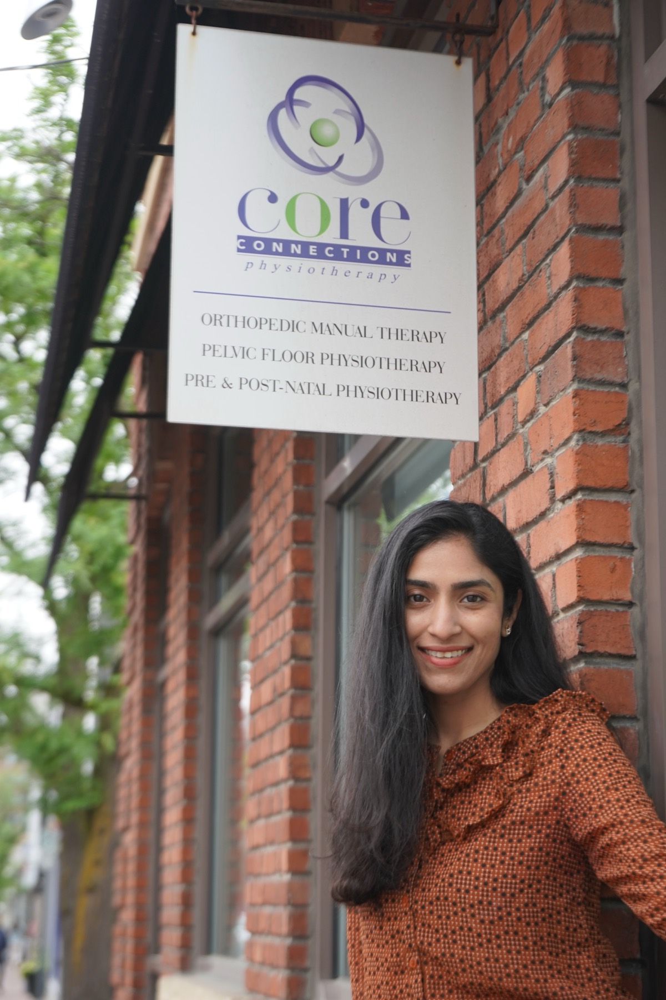

About us
Integrated physiotherapy in the heart of Westboro, since 2008.
A community-based, physiotherapist-owned clinic committed to inclusive, gender-affirming and trauma-informed practice.

Our story
Founded by Heather Grewar.
Heather founded Core Connections Physiotherapy in 2008 out of a deep desire to create a beautiful, community-based clinic and centre of excellence for orthopedic, pre and postnatal, and pelvic health physiotherapy services. After obtaining her Fellowship in Orthopedic Manual Therapy, she started to become keenly interested in the interconnections of pelvic health.
In those early days, in 2008, there was so much to be done to grow pelvic health awareness in Ottawa! She spent years doing community presentations, presenting at conferences, connecting with physicians and other health practitioners in Ottawa, and providing mentoring through the Orthopedic division.
Read more: from a single room to Westboro
Heather’s passion for integrated orthopedic and pelvic health care led her to open Core Connections in a sunny, single-room clinic in Wellington West, across from Bridgehead near Holland Avenue. In 2014, we moved to our beloved home in Westboro, across from MEC on Richmond Road. With its natural light, high ceilings, and warm hardwood floors, the clinic has been a special place of healing, connection, and community ever since.
Over 15 years later, we’ve grown into a dedicated team of experienced practitioners who truly love what we do! Our diverse clinical backgrounds and shared passion for patient care make Core Connections a very special place. Heather is deeply grateful to work alongside such talented and caring colleagues.
As we continue to grow and evolve our services, we remain profoundly grateful to our dear patients for their trust, kindness, and ongoing support. Thank you for being part of our journey!
Who we are
A community-based, physiotherapist-owned clinic.
Compassionate, hands-on care grounded in clinical excellence.
Core Connections Physiotherapy has been providing integrated pelvic health and orthopedic physiotherapy since 2008. We’re proud to provide compassionate, hands-on care grounded in clinical excellence, with a commitment to inclusive, gender-affirming and trauma-informed practice.
Our team brings decades of combined clinical expertise, with individual clinicians offering up to 19 years in pelvic health physiotherapy and up to 36 years in orthopedic manual therapy and exercise.
We offer our services in English, French, Spanish and Telugu.
Our services include
- Pelvic health physiotherapy for women, men, and 2SLGBTQIA+ individuals
- Pre- and postnatal physiotherapy care
- Orthopedic and sports physiotherapy — we are FCAMPT-certified!
- Physiotherapy for hypermobility and Ehlers-Danlos syndromes
- Vestibular physiotherapy
- Physiotherapy for adults 60+
Explore our services · Pessary fitting is now the Ottawa Pessary Clinic.
Our philosophy
We understand and integrate the whole system.
We consider the interconnectedness of the musculoskeletal, pelvic health, fascial, visceral, and nervous systems, alongside broader biopsychosocial influences.
We look beyond symptoms to understand their underlying causes and contributing factors — so we can empower you to lead a healthy, active life.
Inclusive, by design
Everyone is welcome! We are inclusive and sensitive to the unique needs of people of any ethnicity, gender identity, gender expression and sexual orientation.
Gender-affirming & trauma-informed
We provide gender-affirming and trauma-informed care. Learn what that looks like.
A collaborative team
We work collaboratively as a team to provide the best possible integrated care for our patients.
Calm, private spaces
Our clinic space is calm and beautiful and the treatment rooms are private.
Exciting news: the Ottawa Pessary Clinic
Our pessary fitting services have a new name! We’re delighted to introduce the Ottawa Pessary Clinic, officially opening in January 2027. Visit ottawapessaryclinic.ca for more information.
Practical details
Clinic policies
The short version of each policy — tap to expand.
Privacy Policy
We're a team of six registered physiotherapists under the College of Physiotherapists of Ontario, and everyone on staff complies with Ontario's Personal Health Information Protection Act (PHIPA). Your personal information is collected and shared only with your explicit written consent, except where disclosure is required by law.
Clinical files are kept in a PHIPA-compliant practice management system, with access restricted to authorized staff. Faxes go through an encrypted, PHIPA-compliant service, and your email and phone number are never sold or shared with third parties. Paper files are shredded, clinic computers are password-protected, and our premises are alarmed.
Privacy questions or concerns can go to our Health Information Custodian, Heather Grewar, at heather@core-connections.ca or 613-291-2956 — or to Ontario's Information and Privacy Commissioner at 416-326-3333 / info@ipc.on.ca.
Inclusion, Diversity, Equity & Respect Policy
We're dedicated to fostering an environment grounded in inclusion, diversity, and equity, and we value the inherent worth of every individual across the full spectrum of human difference — age, ancestry, ability, gender expression and identity, race, religion, sexual orientation, and more.
Our therapists and support staff deserve a work environment characterized by respectful conduct and communication. Inappropriate behaviour or aggressive language directed at staff will not be accepted, and may result in denial of services.
You can report concerns about conduct, communication, safety, or inclusion by emailing reception@core-connections.ca or submitting our online feedback form. We appreciate your kindness and willingness to work with us to keep this a professional, respectful space for everyone.
Appointment Cancellation Policy & Fees
We ask for 48 business hours' notice to cancel or reschedule — for example, a Monday appointment needs to be cancelled by Thursday at noon, and a Tuesday appointment by Friday at noon. Cancellations must be made by phone at 613-291-2956, Monday–Friday, 8:30am–5pm; we can't accept email cancellations.
Late cancellations (less than 48 business hours' notice) are billed 50% of the appointment cost; no-shows are billed 100%. Payment is arranged by e-transfer to admin@core-connections.ca. We may be able to make an exception for sudden illness, family emergencies, or severe weather — but not for work-related conflicts. You can also avoid a late fee by switching your appointment to telehealth (video or phone) — just call us.
Running late? Let us know. We can't extend your appointment time, but we'll treat you within what's left, and the full appointment fee still applies.
Infection Control Policy
Masks are available at the clinic entrance, and you're welcome to wear one anytime for personal or medical reasons.
Please reschedule if you're experiencing fever or chills, cough, shortness of breath, a runny or congested nose, headache, fatigue, sore throat, muscle aches or joint pain, or stomach issues like vomiting or diarrhea.
If you're recovering from a respiratory infection, please attend only if your symptoms are improving and you feel well enough — and wear a well-fitted mask or respirator (e.g. N95/KN95) to protect others. Telehealth is always available as an alternative.
Appointment Safety Measures
Beyond masking and self-screening (see our Infection Control Policy), we disinfect high-touch surfaces between clients with a hydrogen-peroxide-based cleaner, and disinfect exercise equipment and modalities after every use, with daily disinfection of door knobs and railings.
Our therapists follow best-practice hand hygiene before and after glove use and patient contact. We use HEPA filters in every treatment room, and open windows when weather permits.
Email Policy
For your privacy, please don't share personal or health information by email. For anything confidential, contact our receptionist directly or leave a secure voicemail outside business hours — or book a complimentary 15-minute telehealth appointment with your physiotherapist to talk it through.
For general questions, reach our receptionist Monday–Friday, 8:30am–5pm, at 613-291-2956 or reception@core-connections.ca.
Interested in joining our team?
We’re always glad to hear from physiotherapists who share our approach to care.